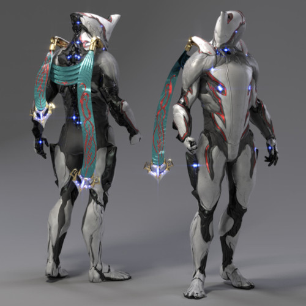
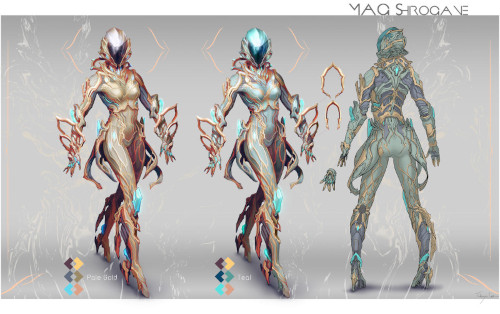
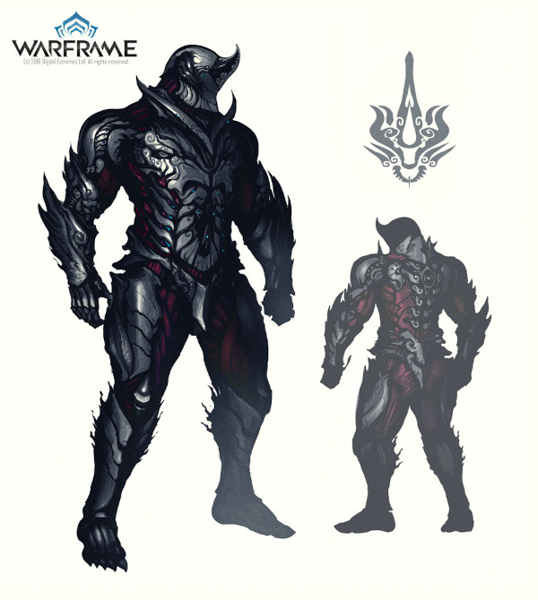
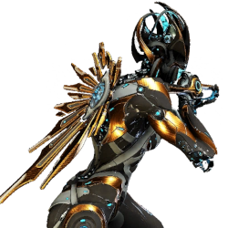

WARFRAME
Warframe é um jogo de ação cooperativa em terceira pessoa, desenvolvido pela Digital Extremes. Em um mundo repleto de guerra e intriga, você assume o papel de um Tenno, um guerreiro antigo que desperta de um longo sono para lutar contra diversas facções que ameaçam a galáxia. Junte-se a outros jogadores e explore vastos planetas, complete missões e colete equipamentos poderosos.
O que é Warframe?
Lançado em 2013, Warframe combina elementos de RPG, tiro em terceira pessoa e combate corpo a corpo. Os jogadores podem personalizar seus Warframes, cada um com habilidades únicas, e formar equipes para enfrentar inimigos desafiadores. O jogo é gratuito para jogar, com microtransações que permitem a compra de itens cosméticos e melhorias.
Facções do Jogo
Em Warframe, você encontrará várias facções, cada uma com suas próprias motivações e estilos de combate. As principais facções incluem:
- Grineer: Uma raça militarizada de clones, conhecidos por sua força bruta.
- Corpus: Uma corporação que prioriza lucro e tecnologia, utilizando robôs e armas avançadas.
- Infested: Criaturas mutantes que são o resultado de uma infecção biológica, atacando tudo em seu caminho.
- Sentients: Antigos inimigos dos Tenno, com habilidades adaptativas e uma história rica.
Conheça os Warframes
Os Warframes são os protagonistas do jogo, cada um com habilidades e estilos de combate únicos. Alguns exemplos incluem:
- Excalibur: Um Warframe equilibrado, ideal para iniciantes, com habilidades de espada e luz. 
- Mag: Especialista em manipulação magnética, capaz de controlar o campo de batalha. 
- Rhino: Um tanque robusto, perfeito para absorver dano e proteger aliados. 
- Nova: Uma Warframe de controle de massa, capaz de desintegrar inimigos com suas habilidades. 
Missões e Modos de Jogo
Warframe oferece uma variedade de missões e modos de jogo, incluindo:
- Missões de Extermínio: Elimine todos os inimigos em uma área designada.
- Missões de Captura: Capture um alvo específico e escape.
- Missões de Defesa: Proteja um objetivo contra ondas de inimigos.
- Missões de Sobrevivência: Sobreviva o maior tempo possível contra inimigos em constante aumento.
Guia para iniciantes abaixo!
Fique por dentro das últimas atualizações, eventos e novidades do jogo. A Digital Extremes frequentemente lança novos conteúdos, incluindo novos Warframes, armas e missões. Não perca as novidades!